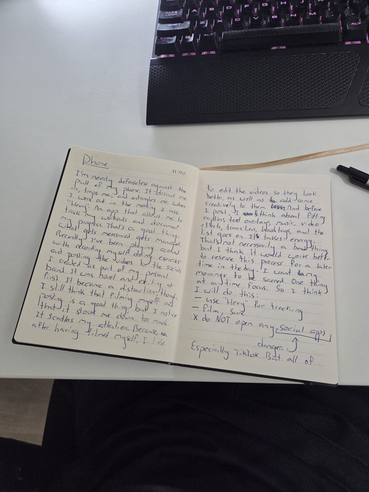

August 30, 2025
I'm nearly defenseless against the pull of my phone. It draws me in, traps me, entangles me. In the mornings I use Hevy: an app that lets me track workouts and document progress. That's a good thing. What gets measured gets managed. But it's also dangerous.
Lately I've been recording myself during workouts and posting clips to the socials I set up for my personal brand. At first it was novel and exciting. Then it became a distraction. Filming is fine. But the editing, the captions, the hashtags... it scatters my attention. Suddenly I'm thinking about angles and music instead of sets and reps. It's fun, yes, but it drains energy.
I still think recording and posting has value. I just don't want it in my mornings. I want my mornings to stay sacred: one thing at a time, focused. So here's the new plan:
Social media apps are dangerous. Especially TikTok. But all of them are absolutely dangerous. They capture you. And I don't even scroll or consume any of the content that's on them. I just create and post. And check likes/comments/view counts. But even that side of the social media machine is so ridiculously addictive, it's like I'm totally powerless. I am, in fact, totally powerless. The only thing I can do is to not open them. So I will practice that: resist the temptation to open any socials in the morning. It'll be a sacrifice, because I like it. But the benefits will far outweigh the sacrifice.
From what time should I allow myself to use socials to post? I'm not sure. For now, I'll set the boundary at midday: 12 p.m.
How to manage using my phone without falling for the trap:
→ Continue morning.
I'll experiment with keeping airplane mode on until 12 in the afternoon. The only thing I'll allow myself to do is posting to my Insta story in airplane mode.

#phone #attention #mornings
@keyonvandenelzen